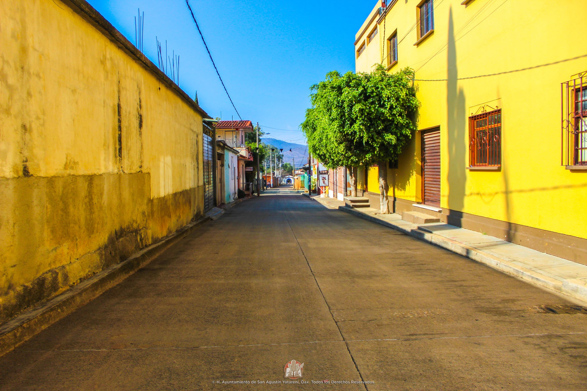
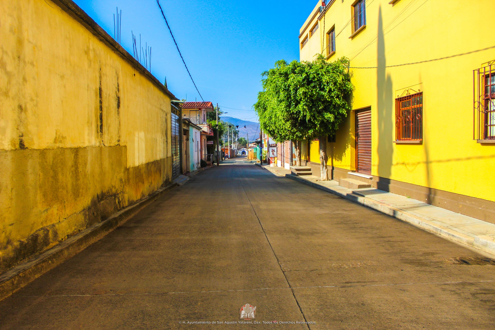

San Agustín Yatareni es uno de los 570 municipios que conforman al estado mexicano
de Oaxaca. Pertenece al distrito centro, dentro de la región valles centrales.
Su cabecera es la localidad homónima.
La toponimia de Yatareni proviene del zapoteco Gueta "Tortilla" y Reni "Sangre" por
lo que significaría "Tortilla de Sangre" esto probablemente por un significado
mitológico y/o un ordenamiento espacial ritual.
San Agustín en honor a San Agustín Obispo que quedó adjunto con el nombre zapoteco.